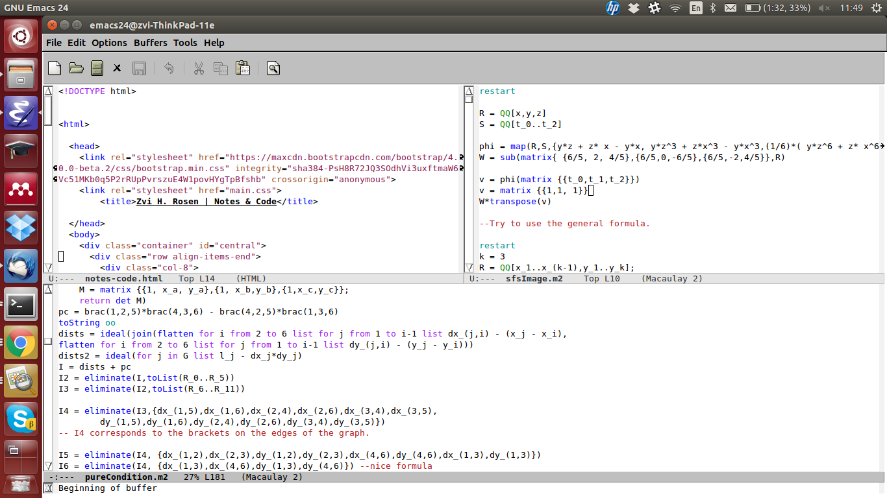

Home
About Me
CV
Research
Teaching
Notes & Code
Misc
Notes & Code
Semester-long Courses
(F'2015)
PSU Math 597C: Applied Algebraic Topology & Geometry - Vladimir Itskov
-- updated 10/1/15
(F'2015)
PSU Math 597B: Mathemtical Neuroscience - Carina Curto
-- updated 9/22/15
(F'2012)
Math 249: Combinatorial Commutative Algebra - Bernd Sturmfels
-- updated 11/19/12
(F'2012)
Math 252: Representation Theory - Mark Haiman
-- updated 11/19/12
(F'2012)
Math 215A: Algebraic Topology - Kate Poirier
-- updated 11/19/12
Programming
Code from
Matrix Completion for the Independence Model
from Kaie Kubjas' github page.
Code from
Computing Algebraic Matroids
.
Expository Writing
Graph Curves
, written for Bernd Sturmfels' Algebraic Curves course.